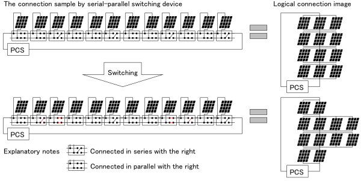

|
太陽光発電モジュール直並切替の最適化ベンチマーク問題 (Ver. 1)
これは旧版になります。最新版は P6-2 (Ver. 2)をご覧ください。 問題概要
太陽光発電システムでは，図1に示すように，太陽光発電モジュール数十枚から数千枚を直列に，あるいは並列に接続し，PCS（パワーコンディショナー）で交流に変換する。太陽光発電モジュールの発電量は，特性のバラつきや影などの影響によってかならずしも均一ではなく，最大電力を発電することができない。本問題は，できるだけ多くの発電量を得るために，モジュール間の配線を動的に再構成する際のモジュールの直列並列配置と電流・電圧量を決定する問題である。
本問題では，54モジュール，9層（並列接続されたモジュールの組）の最適化問題を提供する。
定式化については，文献[1]を参考にされたいが，本ページで公開しているコードは文献[1]の定式化と少し異なる記号と定式化を用いている。詳細については， こちら (PDF) を参考にされたい。

図1：太陽光発電モジュール直並切替装置と接続イメージ（文献[1]から引用）
問題の部類・規模
- 問題のクラス：非線形混合整数計画問題
- 決定変数の数：116（連続：63，離散：53）
- 不等式制約条件数：164（線形：164，非線形：0）
- 等式制約条件数：63（線形：9，非線形：54）
Known Feasible Solutions
| 解法 |
問題 |
目的関数値 |
制約違反 |
文献 |
報告者 |
解 |
| 合計値 |
許容量 |
| Tabu Search（離散変数）+ SQP（連続変数） |
P6-1
| 10757.47985 |
8.61 × 10-12 |
1.0 × 10-10 |
[1] |
T. Hayashi |
解† |
†取得したファイルを解凍し，ソースコード内の「P6_solution_x.txt」,「P6_solution_y.txt」と差し替えて下さい。
ソースコード
参考文献
| [1] |
林孝則：「太陽光発電モジュール直並切替と混合整数最適化問題」，平成26年電気学会全国大会講演論文集，4-S21-5 (2014) |
更新履歴
- July 18th, 2014: 説明文に図を追加。
- June 3rd, 2014: 制約違反許容量を外部ファイルから読み込む形式に変更。
- Apr. 1st, 2014: 文献[1]に基づいたソースコードを公開。
|